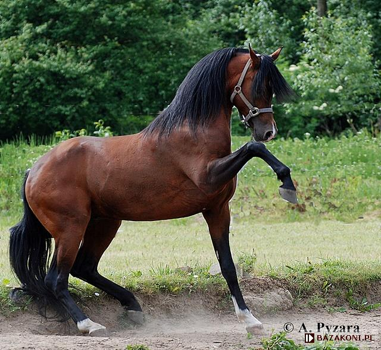
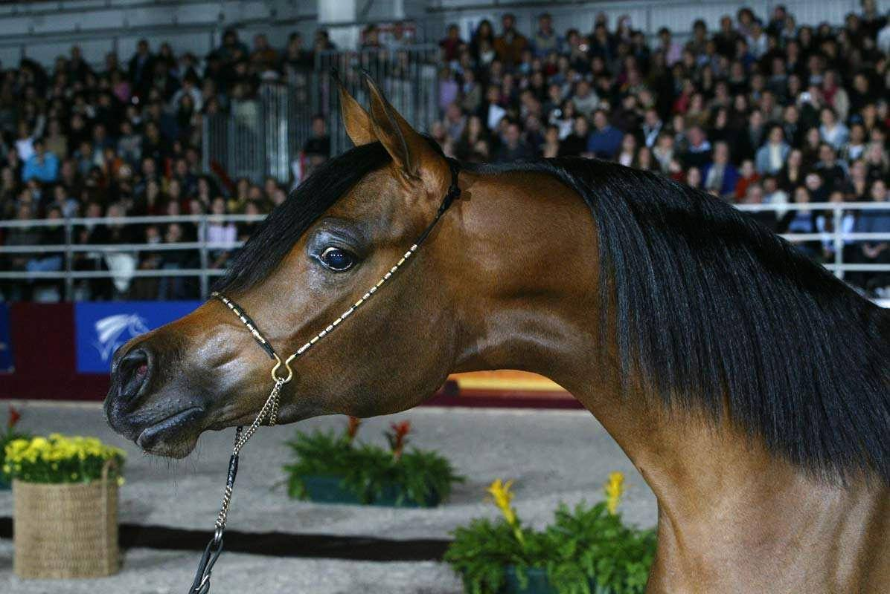
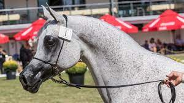

KOŃ CZYSTEJ KRWI ARABSKIEJ
Koń czystej krwii arabskiej jak sama nazwa mówi ma swoje korzenie na Półwyspie Arabskiem. Według pierwszej legendy konie rasy arabskiej pochodzą od pięciu klaczy Mahometa o imionach: Saklavi, Kuhailan, O'Bajan, Hadban i Hamdani, które wrócily w potrzebie podczas gdy inne konie popędziły do wodopoju do którego nie miały dostępu przez cały dzień. Prorok wzywał swoich wyznawców do starannej hodowli koni i dobrego traktowania zwierząt. |
Konie arabskie z natury są niskie, osiągają nie więcej niż (w skrajnych przypadkach) 160 cm w kłębie, chociaż oczywiście są wyjątki. Naturalnie występują głównie w maściach postawowych. Mogą posiadać odmiany na nogach lub głowie. Ich charakterystyczną cechą jest jest szczupaczy profil pyska, lekko karpiowaty grzbiet oraz horyzontalny zad. Oprócz tego największą różnicą między nimi a innymi końmi jest to, że wszystkie inne rasy koni mają osiemnaście żeber, sześć kręgów lędźwiowych i osiemnaście kręgów ogonowych araby mają siedemnaście żeber, pięć kręgów lędźwiowych i szesnaście ogonowych. Koń ten ma jeszcze jedną unikalną cechę, zwaną mitbah, a jest to kąt, pod jakim głowa ustawiona jest w stosunku do szyi. Mała głowa araba, ze zwężającym się pyskiem - jego chrapy powinny zmieścić się w stulonej dłoni - osadzona jest na pięknej, muskularnej szyi stosunkowo wysoko. Rezultatem tego jest cudownie wygięty łuk, który pozwala na niezwykłą ruchomość głowy - może ona swobodnie obracać się niemal we wszystkich kierunkach. Równie unikalną cechą tej rasy jest jibbah, tarczowatego kształtu wypukłość pomiędzy ogromnymi, szeroko rozstawionymi oczami araba, sięgająca w górę do punktu znajdującego się pomiędzy uszami, a w dół do górnej jednej trzeciej kości nosowej. |
Araby obecnie traktowane są jak końskie "modele". Konie tej rasy często można spotkać na wyścigach konnych ze względu na ich zwinność i wrodzoną szybkość lub w konkurasach ujeżdżenia ze względu na lekki i dostojny ruch. Jednak największą popularnością cieszą się pokazy i hodowla koni arabskich. Najlepszymi hodowcami są kraje położone na Półwyspie Arabskim oraz Polska. Konie czytej krwi świetnie sprawdzają sie na tego typu pokazach ze względu na swój wdzięk i urok jednak najbardziej cenioną cechą arabów jest ich wrodzony temperament. Na pokazach pełnych ludzi młode konie są zwykle trochę zdenerwowane i kiedy biegają zaintrykgowane i lekko wystraszone sprawiają wrażenie jeszcze piękniejszych. |
|  |
Pogrom (QR Marc x Pętla)Ogier urodzony 30 kwietnia 2009, mierzy 155 cm w kłębie. Odziedziczył po matce piękne oko oraz bardzo poprawną budowę. Jego najlepszym potomstwem jest Pamina (Pogrom x Pianissima). Już jako roczniak został Czempionem Wiosennego pokazu ogierów młodszych. w 2012 wyjechał do stanów i rozpoczął kariere między narodową. Za oceanem podbił sefca sędziów i wygrał wszystkie pokazy w jakich startował. Obecnie znajduje się w SK Janowie Podlaskim i zajmuje boks ogiera czołowego w stadninie. |
|  |
Pianissima (Gazal Al Shaqab x Pianosa)Urodzona 13 stycznia 2003, już w 2004 została Czempionką Wiosennego Pokazu Młodzieży Klaczy Młodszych w Białce. Była pierwszą klaczą w historii, która zdobyła złote medale Pucharu Narodów, Czempionatu Europy oraz Czempionatu Świata. W 2009 r. podczas Dni Konia Arabskiego w Janowie Podlaskim hodowca zza oceanu wykupił prawo do pokrycia Pianissimy amerykańskim ogierem za 175 tys. euro, czyli 825,5 tys. złoty. Zmarła na skręt jelit 16 października 2015 o godzinie 19. Pomimo natychmiastowej pomocy nie dało jej się uratować. |
|  |
Pepita (Ekstern x Pepesza)Klacz urodzona 29 stycznia 2005 roku w SK Janów Podlaski. Mierzy 150 cm w kłębie. Zasłenęła ze swojej rekordowej sprzedarzy w 2015 na Pride of Poland została sprzedana za 1,4 miliona euro, czyli w przeliczeniu 6,6 miliona złoty. Na IV i V Jesiennym pokaze klaczy starszych zajęła 2 miejsca oraz zdobyła v-ce czempiona klaczy starszych. Na XXVI pokazie klaczy starszych zajęła 1 miejsce, oprócz tego zdobyła czempiona klaczy starszych i została Najlepszym koniem pokazu. |